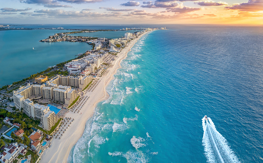

Acapulco es un ícono del turismo en México, al convertirse en el primer destino de sol y playa que tuvo fama a nivel internacional. En la década de los 50, fue el escondite de vacaciones, fiestas y bodas del jet-set hollywodense y la realeza británica, que dejaban los escenarios o sus palacios para disfrutar de la belleza exuberante de sus aguas y acantilados que, hasta hoy, protegen la bahía ubicada en el estado de Guerrero.
CANCUN

Cancún es reconocido en todo el mundo por sus espectaculares playas de arena blanca y su fascinante mar en tonos azul turquesa. Con lugares naturales únicos, cultura maya, actividades acuáticas y de aventura. Gastronomía internacional, espectaculares campos de golf, sofisticadas instalaciones de spas; exclusivos centros comerciales, mercados típicos de artesanías así como espectáculos, bares y centros nocturnos que dan fama a su incomparable vida nocturna.